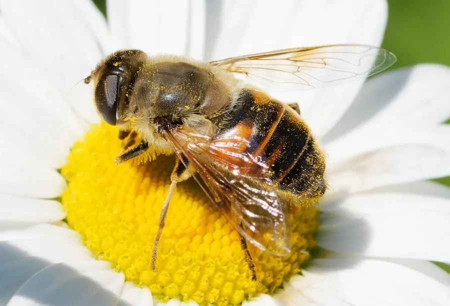

昆虫 · 动物界
蜂蝇 Eristalis tenax

成虫酷似蜜蜂、幼虫长着细长“鼠尾”呼吸管的食蚜蝇，幼虫生活在污水和腐殖质中，常被用作水质指示生物。
- 分类
- 门节肢动物门纲昆虫纲目双翅目科食蚜蝇科属蜂蝇属
- 栖息环境
- 成虫访花，幼虫生活在污水、粪池和腐烂有机质中
- 地理分布
- 全球广泛分布，中国各地均有
- 保护级别
- 暂无评估
物种志
蜂蝇成虫体长 12–15 mm，体表密布黄褐色绒毛，腹部有黄黑相间的斑纹，外形极像蜜蜂；复眼上有纵向的毛带。它和蜜蜂的区别在于只有一对翅膀、触角短小，停息时也不像蜜蜂那样把翅膀折叠起来。
蜂蝇全球分布，中国各地常见。成虫访花吸蜜、传播花粉，秋季常停在花丛和阳光下；幼虫俗称“鼠尾蛆”，生活在污水、粪池和腐烂有机质中，尾端有一根可伸长的呼吸管，能伸出水面呼吸空气。鼠尾蛆能在低氧的污染水体中生存，常被用作水质污染的指示生物。在污水处理和生态监测中，蜂蝇幼虫的出现往往意味着水体有机污染较重。目前它没有IUCN 的正式评估，中国未将其列入国家重点保护野生动物名录。
形态与习性
- 食性成虫吸食花蜜，幼虫取食污水中的有机碎屑
- 体长12–15 mm
- 幼虫俗称“鼠尾蛆”，尾端有细长呼吸管伸出水面
- 栖息环境幼虫生活在污水、粪池和腐烂有机质中
- 生态作用成虫传粉，幼虫是水质污染的指示生物
- 习性成虫秋季常见，常停在花丛和阳光下
趣味知识
- 蜂蝇的幼虫尾端有一根细长的呼吸管，像老鼠尾巴，因此被称为“鼠尾蛆”。
- 成虫外形酷似蜜蜂，但没有螫针，不会蜇人。
- 鼠尾蛆能在污染严重的水体中生活，是水质监测的指示生物。